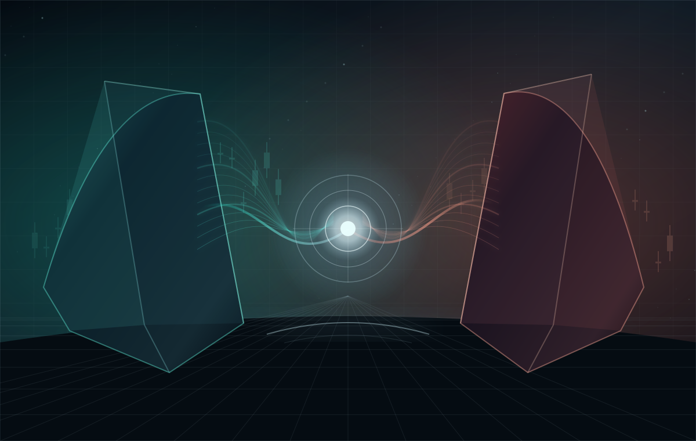

Independent analysis
Long and short specialists form distinct theses from synchronized, completed market data. Neither needs an actionable entry to provide useful risk evidence.
An operational long-only paper bot and a separate research system where bullish and bearish specialists exchange evidence to select one LONG, SHORT, or WAIT decision. No live-money execution or proven cooperative edge.

Both systems analyze the same closed market snapshot. They exchange supporting and contradictory evidence, revise their assessments, and select one risk-controlled LONG, SHORT, or WAIT outcome. This is an offline research architecture, not an active trading pair.
Long and short specialists form distinct theses from synchronized, completed market data. Neither needs an actionable entry to provide useful risk evidence.
Both consume each other's evidence. Each can confirm, strengthen, downgrade, or withdraw its original view under explicit deterministic rules.
A joint controller selects LONG, SHORT, or WAIT. A separate portfolio risk boundary restricts exposure to a single simulated position.
Separate scheduled paper cycles on X201. Historical ledger preserved. No live-money trading.
Offline, journal-only comparison. Short transport unqualified; no demonstrated cooperative edge.
Initial shadow records; insufficient prospective evidence. No hypothetical trades or PnL yet.
The original illustrative candlestick module is retained here. It contains synthetic index values only—not a live ETH feed, historical performance chart, or trade recommendations.
Project-reported static snapshot as of November 7–8, 2026. 1,467 events and two fills refer to the original paper ledger; 779 passing tests refer to research software. No live feed or trading access is available on this webpage.
Five defined processing stages. The public-data sentinel and the isolated research environment operate outside the paper execution path.
Validated closed candles provide strategy inputs. The separate credential-free sentinel monitors public markets without order-execution authority.
paper/market_data.py · paper/sentinel.pyPublic reference markets, PF_ETHUSD paper futures, inverse contracts, and isolated shadow research are distinct data and accounting contexts. This site is not connected to any of them.
Long-only deterministic entry logic. The control panel below evaluates hypothetical Boolean inputs, not market prices or trading opportunities.
Two required conditions are not satisfied.
A passing demonstration is not a live trade signal, authorization, or submitted order.
Source-reported strategy requires at least 181 closed four-hour candles and at least 60 completed daily observations before evaluating the six entry conditions. That prerequisite is assumed satisfied in this illustration.
Daily close below SMA50
SMA20 falls below SMA50
Volatility-adjusted momentum becomes negative
Documented policy versions are separate research configurations, not evidence of current deployment settings.
| Configuration | Baseline / position | Controls documented | Evidence status |
|---|---|---|---|
| Strategy charter v1July 2026 | 1× baseline | Long-or-flat; one maximum position; no averaging down; deterministic sizing and entry breakers. | Historical specification |
| Paper contract v3Paper-only envelope | 10× ceiling $4,000 notional cap | $400 reference; 1% emergency stop; 20% daily and 60% high-water entry breakers; 0.05% taker fee per fill. | Paper-only specification |
| July qualification candidateConservative proposal | 1× baseline $74 target / $75 max | Stale-data handling; stop protection; order reconciliation; kill-switch requirements. | Candidate, not qualified |
Known bad snapshots identified in historical replay.
PROJECT-REPORTED / NOT RERUNReported no false positives in the same replay.
PROJECT-REPORTED / NOT RERUNZero reported parity mismatches against a pinned reference; not evidence of predictive performance.
PROJECT-REPORTED / NOT RERUNReported paper-control records and a separate failed shadow simulation. They cannot be aggregated into a performance return.
Reference starting collateral: $400. The state file was last updated before the November 1 ledger audit. Collateral is not equity. The record does not establish current account value, realized P&L, fees, return, or drawdown.
All 18 recorded closed trades lost. Estimated adverse execution drag: $33.6406. This result belongs to a retired shadow experiment, not the paper control account or live trading.
Selected dates from available project records. This is not a complete source-control history.
Risk requirements, long-or-flat intent, and evidence-led qualification documented.
Paper autonomy and live trading rejected as unqualified; historical 179-test run and zero forward closes reported.
Separate strategy removed after 18 losing closed trades.
Paper accrual discrepancy versus public funding reference prompted corrected-equity analysis.
Fail-closed market-data protection; historical replay detection figures reported, not independently rerun here.
Ledger integrity passed in project report; 1,374 events, 535 strategy decisions, and two reconciled fills. Paper state remained stale.
Planned criteria from the project records. None implies live-trading authorization.
Freeze the exact source, parameters, input datasets, and evaluation window for review.
Target at least 30 attributable forward closes over at least 180 calendar days, with realistic fees, funding, and execution costs.
Verify mutation recovery, reconciled accounting, and exact source before any promotion decision.
All figures are source-reported or project-record-reported as indicated. Historical checks were not independently rerun for this portfolio. No live service, API key, exchange session, or trading control is exposed.